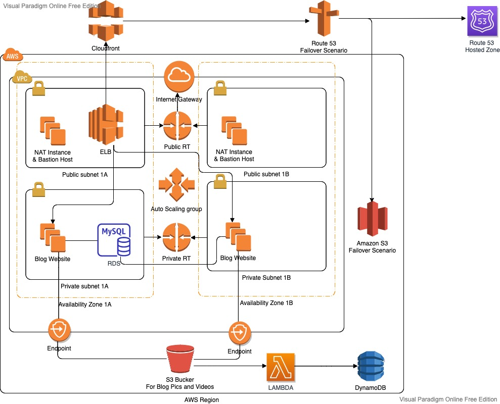

Cloud Infrastructure Case Study
AWS Three-Tier Web Application Infrastructure
An AWS infrastructure implementation for deploying a supplied Django blog application across a multi-AZ network architecture with load balancing, automatic scaling, managed database services, secure content delivery, and failover routing.
Project Overview
The project focused on deploying a supplied Django blog application into an isolated AWS VPC. The infrastructure separated public-facing traffic, application servers, and the database layer while supporting media storage, automatic scaling, HTTPS delivery, and a static failover page.
Project Context and My Role
The Django application and initial project requirements were supplied as part of a Clarusway course project. The work focused on creating and configuring the AWS environment, connecting the application to Amazon RDS and Amazon S3, preparing EC2 launch automation, and integrating networking, security, scaling, content delivery, and failover components.
Architecture
Primary request flow and media/event flows used a combination of load balancing, managed services, and event-driven functions to process uploads and serve content securely.

Route 53
→ Amazon CloudFront
→ Application Load Balancer
→ Auto Scaling Group
→ Amazon EC2 instances running Django
→ Amazon RDS for MySQL
Django application
→ Amazon S3
→ S3 event notification
→ AWS Lambda
→ Amazon DynamoDB
Route 53 health check
→ Primary: CloudFront and the application environment
→ Secondary: Amazon S3 static maintenance page
Network Design
The infrastructure used a dedicated VPC across two Availability Zones. Each AZ contained one public and one private subnet. Public subnets hosted internet-facing components; private subnets hosted application and database resources. An Internet Gateway and route tables provided external connectivity, with NAT-based outbound access for private resources. Security group rules allowed traffic from the load balancer to application instances and from instances to the database.
Application and Data Layers
- Django application deployed to Amazon EC2
- Launch Template used to automate instance preparation
- Auto Scaling Group distributed across Availability Zones
- Application Load Balancer used for traffic distribution and health checks
- Amazon RDS for MySQL used for relational application data
- Amazon S3 used for uploaded media
- Amazon DynamoDB used to record S3 object information
- AWS Lambda triggered by S3 events
Availability and Traffic Management
Application Load Balancer was used for traffic distribution and health checking. Auto Scaling Group maintained application capacity across AZs. Amazon CloudFront provided content delivery; AWS Certificate Manager managed TLS certificates and HTTP-to-HTTPS redirection. Route 53 health checks and failover routing used a static S3 maintenance page as the secondary target.
Technology Stack
Networking
Compute and Scaling
Data and Storage
Delivery and DNS
Application and Integration
Architecture Decisions and Modernization Notes
Multi-AZ subnet design separated public, application, and database concerns. Load balancing and Auto Scaling supported replaceable application instances. Amazon RDS provided a managed relational database layer, and Amazon S3 separated uploaded media from application instances. CloudFront and Route 53 provided content delivery and DNS routing. The implementation followed the course requirements available at the time. For a current redesign, administrative access and IAM permissions would be further restricted through least-privilege policies and managed access mechanisms. A current redesign would also evaluate managed NAT Gateway or other modern outbound-access patterns depending on cost and architecture requirements.
Project Status
The original AWS resources, domain configuration, and live environment have been decommissioned. The project is retained as an AWS infrastructure implementation and architecture case study.